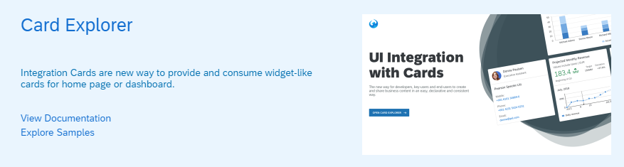

|
Format Option
The format option |
|
New Semantic Rendering With
The To enable this type of rendering, set the
For more information, see the API Reference. |
sap.ui.integration.widgets.CardUsing our newly developed tool - Card Explorer - you can explore and learn more about the UI Integration Cards. You can find the Card Explorer in the tool section of the Demo Kit.  For more information, see Card Explorer. |
|
SAPUI5 OData V4 Model The new version of the SAPUI5 OData V4 model introduces the following features:
Restriction
Due to the limited feature scope of this
version of the SAPUI5 OData V4 model, check that all required features are in place
before developing freestyle and Fiori elements applications.
Double check the detailed documentation of the features, as
certain parts of a feature may be missing. While we aim to be
compatible with existing controls, some controls might not work
due to small incompatibilities compared to
For more information, see OData V4 Model, the API Reference, and the Samples. |
|
Text Wrapping for Spreadsheet Export If you set the new |
|
You can now change the background color of the
|
sap.f.GridContainer
(Experimental)We have enhanced the drag and drop functionality. With the new version, we introduced a drop indicator that mimics the size of the dragged item and shows the potential drop position inside the grid. The indicator pushes away other grid items, showing the correct arrangement calculated by the grid’s auto-placement algorithm. The API for the enhanced drag and drop is consistent with the default drag and drop API. This allows you to configure complex behavior. For more information, see the API Reference and the Sample. |
|
The options displayed in the picker now depend on the display
format. For example, if the set |
sap.m.SelectDialog,
sap.m.TableSelectDialogApplication
developers can now customize the text of the confirmation button
for the controls. If no specific value is set, the text of the
button is set to |
sap.m.SelectDialogWe
have introduced a new API method called
|
|
The This behavior is supported for page variants and control variants
(for example, variant management within the
|
| List Report and Object Page You can now
implement context-independent actions that call OData
Object Page
Analytical List Page ALP supports the use of avatars. Overview Page OVP supports the use of images, icons, and avatars. For more information, see Using Images, Initials, and Icons. |
|
API Reference To improve the visualization of borrowed Properties, Aggregations, and Associations, we added a checkbox that enables you to switch them on and off. Initially, the borrowed entities aren't displayed. |
|
Web Page Title The web page title is now updated dynamically to reflect the currently open tab. The differentiation is between the main pages of the Demo Kit app – Documentation, API Reference, Samples, Demo Apps, and Tools. |